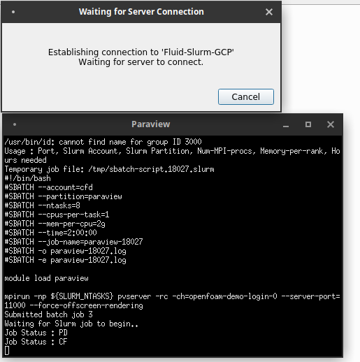

Last Updated: 2020-11-04
What you will build
In this codelab, you are going to deploy an auto-scaling HPC cluster on Google Cloud that comes with OpenFOAM, Paraview, and mesh generation tools. You will use this infrastructure to connect your local Paraview client with Paraview server deployed on ephemeral compute nodes on Cloud CFD.
This setup will allow you to leverage Google Cloud Platform as a Paraview render farm for visualization and post-processing of scientific data.
What you will learn
- How to configure Identity and Access Management (IAM) policies for operating an HPC cluster on Google Cloud Platform
- How to deploy a cloud-native HPC cluster with the Slurm job scheduler
- How to set up basic Slurm accounting with Fluid Numerics' cluster-services
- How to connect your local Paraview Client to Paraview server deployed to auto-scaling compute nodes on Google Cloud Platform.
What you will need
- GSuite, Cloud Identity, or Gmail Account
- Google Cloud Platform Project with Billing enabled
- Project owner role on your GCP Project
- Sufficient Compute Engine Quota (24 vCPUs and 100 GB PD-Standard Disk)
- Paraview 5.8.0
Set IAM Policies
In HPC, there are clear distinctions between system administrators and system users. System administrators generally have "root access" enabling them to manage and operate compute resources. System users are generally researchers, scientists, and application engineers that only need to leverage the resources to execute jobs.
On Google Cloud Platform, the OS Login API provisions POSIX user information from GSuite, Cloud Identity, and Gmail accounts. Additionally, OS Login integrates with GCP's Identity and Access Management (IAM) system to determine if users should be allowed to escalate privileges on Linux systems.
In this tutorial, we assume you are filling the system administrator and compute engine administrator roles. We will configure IAM policies to give you sufficient permissions to accomplish the following tasks
- Create/Delete Google Compute Engine (GCE) VM instances
- SSH into GCE VM instances
- Escalate privileges on GCE VM instances

To give yourself the necessary IAM roles to complete this tutorial
- Navigate to IAM & Admin > IAM in the Products and Services menu.
- Click "+Add" near the top of the page.
- Type in your GSuite account, Cloud Identity Account, or Gmail account under "Members"
- Add the following roles : Compute Admin, Compute OS Admin Login, and Service Account User
- Click Save
In this section you will configure your firewall rules in Google Cloud Platform to permit a reverse SSH connection from Paraview server to your local Paraview Client.
- Open your VPC Network Firewall Settings in Google Cloud.
- Click on "Create Firewall Rule"
- Set the Firewall Rule Name to "allow-pvserver-tcp"
- Set the Targets to "All instances in the network"
- For the Source IP Ranges, add your external IPv4 Address
- For the Ports and Protocols, check the box next to "tcp" and set the port to 11000
- Click Create.
In this section, you will deploy the Cloud CFD solution, an auto-scaling HPC cluster with the Slurm job scheduler and software that supports computational fluid dynamics workflows, including Paraview.
- Open https://console.cloud.google.com/marketplace/details/fluid-cluster-ops/cloud-cfd.
- Click "Launch"
- Give the deployment a name (e.g. paraview-demo) and select the GCP zone where you want to deploy your cluster.
- Leave the Controller and Login settings at their default settings.

- In the Partition Configuration section, set the Paraview Machine Type to `n1-standard-8`.
- Click "Deploy" and wait for the cluster to be created.
In this section, we will access the cluster's login node to configure Slurm accounting, so that you can submit jobs using the Slurm job scheduler.
- SSH into the cluster's login node
- Go root
sudo su- Create a cluster-configuration file using cluster-services.
cluster-services list all > config.yaml- Append a sample slurm_accounts block to the end of the
config.yamlfile.
cluster-services sample slurm_accounts >> config.yaml- Edit the cluster-configuration file so that you are allowed to submit to the
openfoampartition. Make sure you remove the emptyslurm_accounts: []that is pre-populated in the cluster-configuration file.
The exampleslurm_accountconfiguration below will create a Slurm account calledcfdwith the userjoeadded to it. Users in this account will be allowed to submit jobs to themeshing,openfoam, andparaviewpartitions.
slurm_accounts:
- allowed_partitions:
- meshing
- openfoam
- paraview
name: cfd
users:
- joe- Preview the changes for updating the
slurm_accounts. Verify that you have entered in the Slurm accounting information correctly.
cluster-services update slurm_accounts --config=config.yaml --preview- Apply the changes.
cluster-services update slurm_accounts --config=config.yaml - Exit from root.
exitIn this section, you will use Paraview on your local workstation to connect to paraview server, deployed to compute nodes on your cluster.
- On your local workstation, make a directory called
paraview-pvsc/
mkdir paraview-pvsc- Copy the
paraview-gcp.pvscfile from your login node toparaview-pvsc/
scp USERNAME@LOGIN-IP:/apps/share/paraview-gcp.pvsc ./paraview-pvsc/- Start paraview from your terminal on your workstation.
paraview &- Click on the "Connect to Server" icon in the toolbar. This is the third icon from the left, near the open file icon.
- On the dialog that appears, click on Load Servers.
- Navigate to the paraview-gcp.pvsc file that you've copied from the cluster and click Open.
- Click Connect.
- Fill out the form that appears, using settings that are consistent with your cluster and your firewall rule settings. Specifically, make sure that the SSH username is your username on the cluster, the Login Node IP Address is the login node's external IP address, and the server port is set to 11000 (the same port we opened in the Firewall Configuration section of this tutorial).
- Click Ok.
From here, your paraview client will launch an Xterm window. 
Within this window, a series of commands are run automatically for you.
- An SSH tunnel is opened with your Cloud CFD cluster's login node over the specified tcp port
- The /apps/share/submit-paraview.sh script is executed on the login to submit a batch job.
- The instructions in the batch job will launch Paraview server with the desired number of MPI ranks and create a reverse TCP connection back to the login node over the same port.
Additionally, you will be able to monitor the status of the node configuration.
Once the job starts and the Paraview server is connected, you will be able to open files in your Paraview client that are located on your Cloud CFD cluster.
In this codelab, you created a cloud-native HPC cluster and connected your local Paraview client to Paraview server that runs on auto-scaling compute nodes on Google Cloud Platform!
Further reading
- Learn how to run Parallel OpenFOAM jobs on Google Cloud Platform with Cloud CFD
- Learn how to configure a high availability compute partition (multi-zone)
- Learn how to configure a globally scalable compute partition (multi-region)
- Learn how to configure OS-Login to ssh to your cluster with 3rd party ssh tools
- Learn how to manage POSIX user information with the directory API
- https://help.fluidnumerics.com/cfd-gcp